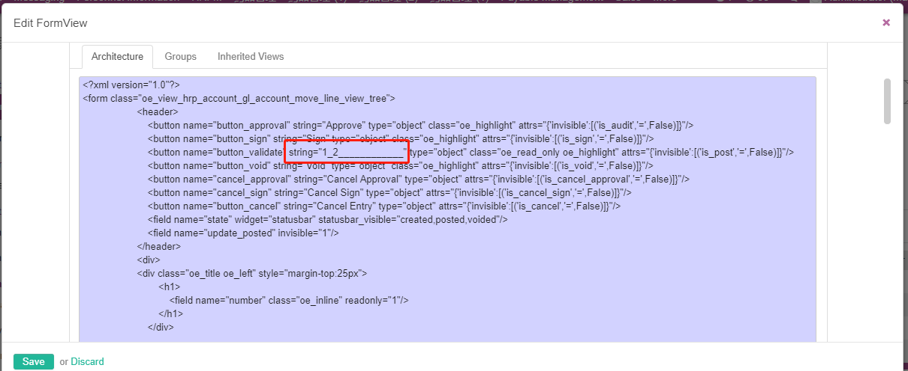
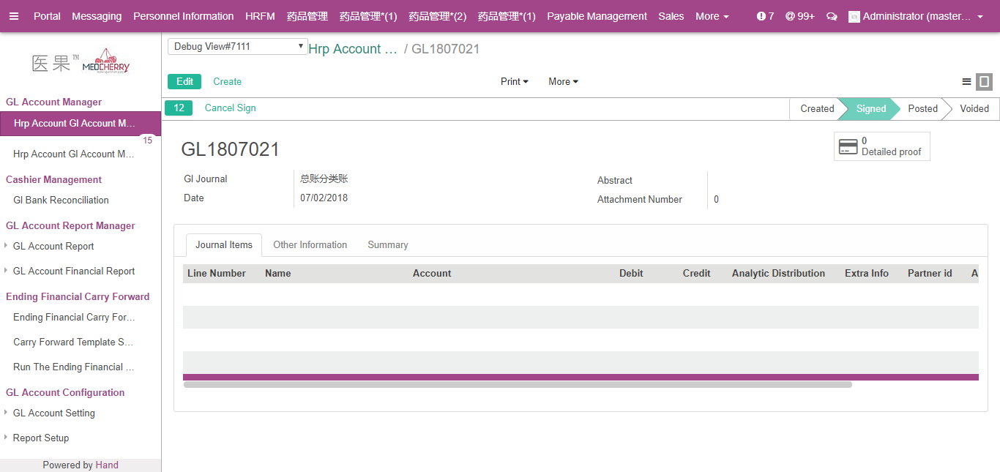

ir_translation简章
[字段]
lang src name res_id module state comments value type
几种翻译的加载方式
普通按钮翻译
直接加载翻译 注:(XML上的按钮翻译旧源不认识下划线_)  
报表翻译
report:report_name:0 直接加载翻译
菜单翻译
重启 - 升级 - 加载翻译
字段翻译
直接加载翻译
code翻译
直接加载翻译
重写源码的字段翻译
直接在继承的小模块i18n中重写 module:写原来的或但钱模块的都可以 最后在数据库中会被转换成小模块的 例如:hrp_account 翻译的显示值使用的是id最大的那一个匹配值
#. module: account #: selection:account.invoice,state:0 msgid "Open" msgstr "已审批"